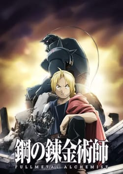
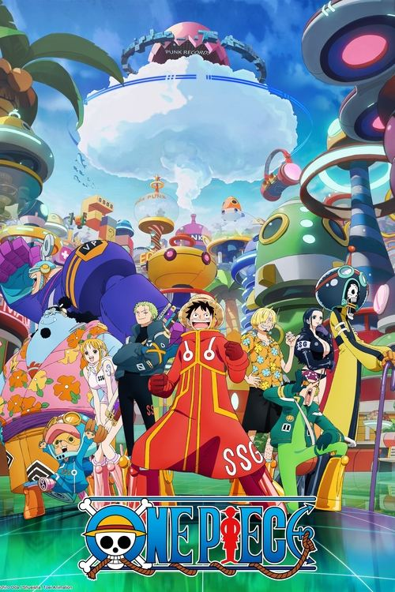

1. Attack On Titans

A gripping story of humanity fighting for survival against monstrous Titans.
2. Dragon Ball Z

Dragon Ball Z follow Goku and his friends as they defend Earth from powerfull foes in epic battles of strenth, destiny and spirit.
3. Death Note

A psychological thriller about a high school student who gains the power to kill anyone by writing their name in a notebook.
4. Fullmetal Alchemist: Brotherhood
Two brothers use alchemy to search for the Philosopher's Stone to restore what they have lost in a failed experiment.
5. One Piece
Join Monkey D. Luffy and his crew on an adventurous journey to find the greatest treasure and become the Pirate King.